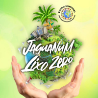
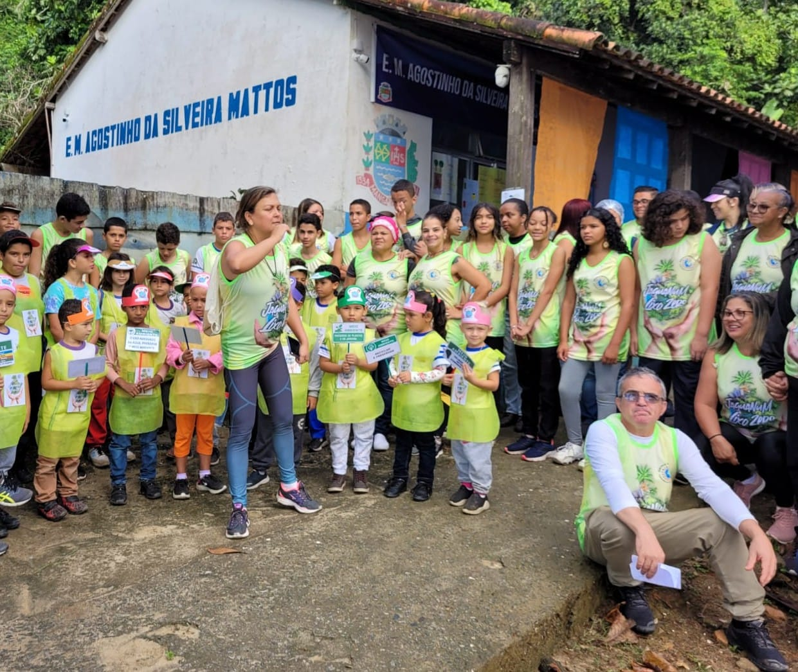

Bem-vindo ao Projeto Jaguanum Lixo Zero!
O Projeto Jaguanum Lixo Zero foi criado na
Escola Agostinho da Silveira Mattos
(Mangaratiba) junto ao Observatório Socioambiental da Baía de Sepetiba, projeto este desenvolvido pela
UERJ - Instituído de Geografia
, com apoio da FAPERJ. A fim de trazer novos conhecimentos para seus alunos, interagindo toda comunidade escolar.
Objetivos do Projeto:
- 1) Fazer o aluno perceber que ele é parte integrante do meio ambiente.
- 2) Estudar e classificar os lixos que chegam a Jaguanum.
- 3) Conscientizar os pais, a comunidade e os turistas sobre o armazenamento correto do lixo e seu descarte final.
- 4) Expandir o projeto às todas as Ilhas pertencentes ao Bairro de Itacuruçá.
